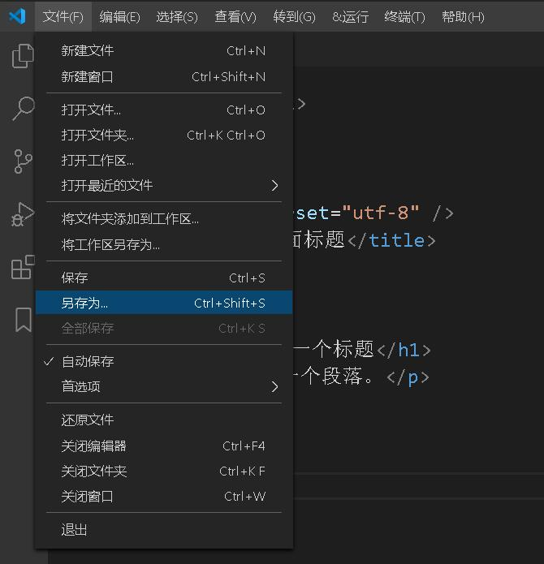
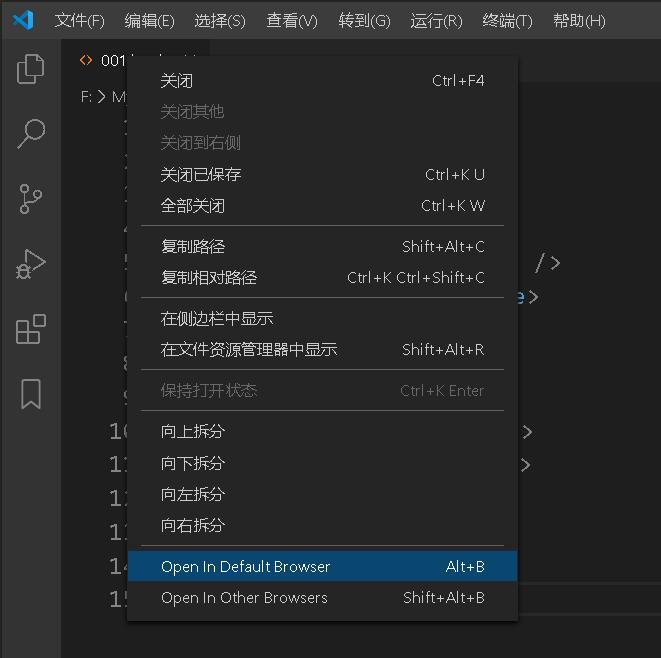
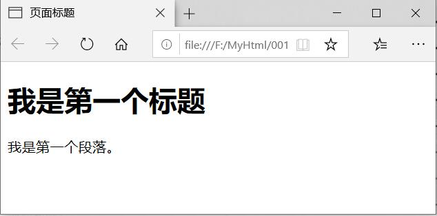

HTML 编辑器
使用 Notepad 或 TextEdit 来编写 HTML
可以使用专业的 HTML 编辑器来编辑 HTML：
- Adobe Dreamweaver
- Microsoft Expression Web
- CoffeeCup HTML Editor
- VS Code:https://code.visualstudio.com/
- Sublime Text:http://www.sublimetext.com/
不过，我们同时推荐使用文本编辑器来学习 HTML，比如 Notepad (PC)、TextEdit (Mac)、VisualStudio Code或Sublime Text。我们相信，使用一款简单的文本编辑器是学习 HTML 的好方法。
一、记事本
通过记事本，依照以下四步来创建您的第一张网页。
步骤一：启动记事本
如何启动记事本：
〓开始按钮→〓所有程序→〓附件→〓记事本
步骤二：用记事本来编辑 HTML
在记事本中键入 HTML 代码：

步骤三：保存HTML
在记事本的文件菜单选择“另存为”。
当您保存 HTML 文件时，既可以使用 .htm 也可以使用 .html 扩展名。两者没有区别，完全根据您的喜好。
在一个容易记忆的文件夹中保存这个文件，比如：MyHtml。
步骤四：在浏览器中运行这个 HTML 文件
启动您的浏览器，然后选择“文件”菜单的“打开文件”命令，或者直接在文件夹中双击您的 HMTL 文件。
结果应该类似这样：

二、VisualStudio Code
Visual Studio Code（简称 VS Code）是一个由微软开发，同时支持 Windows 、 Linux 和 macOS 等操作系统且开放源代码的代码编辑器，编辑器中内置了扩展程序管理的功能。
VS Code官网：https://code.visualstudio.com/
你可以从VisualStudio Code的官网中下载对应的软件，按步骤安装即可。
接下来我们将为大家演示如何使用 VS Code 工具来创建 HTML 文件，其他工具操作步骤类似。
步骤一：新建HTML文件
在 VS Code 安装完成->打开后，选择" 文件(F)->新建文件(N) "，在新建的文件中输入以下代码：
<!DOCTYPE html>
<html>
<head>
<meat charset="utf-8" />
<title>HTML教程</title>
</head>
<body>
<h1>我是第一个标题</h1>
<p>我是第一个段落。</p>
</body>
</html>
步骤2：另存为HTML文件
然后选择" 文件(F)->另存为(A) "，文件名为 runoob.html:
当您保存 HTML 文件时，既可以使用 .htm 也可以使用 .html 扩展名。两者没有区别，完全根据您的喜好，我建议统一用 .html。 在一个容易记忆的文件夹中保存这个文件，比如:001
步骤3：在浏览器中运行这个HTML文件
然后鼠标右击编辑器上的文件名，选择在默认浏览器打开（也可以其他的浏览器）:
显示结果类似如下：
VS Code 和 Sublime Text 还可以配合 Emmet 插件来提高编码速度。 Emmet 官网：http://emmet.io/